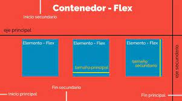

FLEX BOX
¿Qué es Flexbox?
Flexbox es un módulo de diseño de CSS3 que se creó para mejorar la forma en la que se hace diseño responsive, evitando así el uso de float, escribiendo menos código y facilitando el posicionamiento de elementos, incluso no teniendo noción del tamaño de éstos. Básicamente la idea de Flexbox es poder alterar el ancho, alto y posicionamiento de elementos de la mejor manera con el espacio del que disponemos.Estructura
La estructura de Flexbox se compone de contenedores padre e hijos (Contenedor-Flex y Elementos-Flex respectivamente) El Contenedor-Flex es nuestro contenedor padre, y es él quién va a contener a todos los elementos hijos a los cuáles queremos posicionar.
El Elemento-Flex es nuestro elemento hijo, el cual utilizará todo el espacio disponible para ubicarse de acuerdo a las propiedades a las cuales este sometido junto a los demas Elementos-Flex contenidos. Cada diseño flex esta compuesto por dos ejes: Un eje principal que define el posicionamiento horizontal de los Elementos-Flex. Un eje secundario que define el posicionamiento vertical de los Elementos-Flex. El Contendor-Flex contiene direcciones que definen el origen y el fin del flujo de Elementos-Flex: Inicio principal Fin principal Inicio secundario Fin secundario Cada Elemento-Flex está definido por sus dimensiones, anchura(tamaño principal) y altura(tamaño secundario) que dependen del eje principal y el eje secundario.Propiedades
Si queremos utilizar las propiedades de Flexbox tendremos que definirlo mediante la propiedad display y su valor flex o inline-flex dentro del selector que nosotros definamos que es nuestro elemento padre o Contenedor-Flex..contenedor-padre { display: flex }
En este artículo solo daremos un pantallazo de las principales propiedades del elemento padre con una breve descripción en cada una.Flex-direction Es la encargada de definir el eje principal y secundario de nuestros elementos hijos. Estos ejes como ya se mencionó pueden se verticales, formando columnas y horizontales formando filas. .contenedor-padre { display: flex ; flex-direction: row | row-reverse | column | column-reverse ; }
Flex-wrap Por defecto flex, trata de disponer de los elementos en una misma línea, si no es el caso que necesitás, con flex-wrap podés ordenar los elementos en mas de una fila o columna. .contenedor-padre { display: flex ; flex-wrap: nowrap | wrap | wrap-reverse ; }
Justify-content Cuando nombramos el eje principal de un elemento padre, es decir el eje horizontal, se destaca esta propiedad para dar direccionamiento a los elementos hijos. .contenedor-padre { display: flex ; justify-content: stretch | flex-start | flex-end | center | space-between | space-around | space-evenly ; }
Align-items Al igual que justify-content esta propiedad te permite distribuir los elementos en un eje, pero esta vez en el eje vertical. .contenedor-padre { display: flex ; align-items: flex-start | flex-end | center | stretch | baseline ; }
Para finalizar hay que remarcar que dichas propiedades se pueden combinar unas con otras, definir contenedores padres con elementos hijos a los cuales también pueden definirse como padres que contienen hijos y así sucesivamente. Es por ello que Flexbox nos da un sin fin de posibilidades para crear disposiciones para los componentes de nuestras páginas web, de una manera sencilla y muy fácil de aprender.